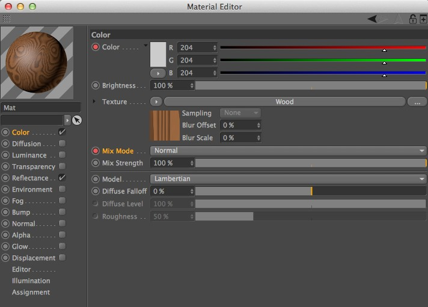
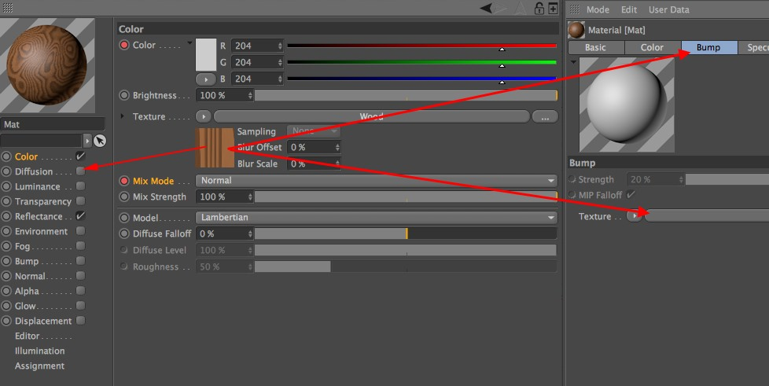

Function available in CINEMA 4D Prime, Visualize, Broadcast, Studio & BodyPaint 3D
 材质
材质
材质
材质编辑器中会显示材质的属性并进行编辑。可以通过双击材质管理器中的材质来打开材质编辑器。在材质管理器中，通道显示在窗口左侧，而在属性管理器中，通道则显示在基本标签中。其他方面的功能这两个管理器都是相同的。
颜色和混合模式设置了动画。
材质编辑器是一个分离的窗口，左上角显示了材质的预览效果。这里有许多页参数，它们的设置组合起来就形成了材质。在窗口左边你会看到这些参数页的列表，它们被称为通道。大部分情况下并不需要用到所有的通道，使用通道名称旁边的选框来选择哪个通道（即属性）会用在材质中。要使用参数页，点击通道的名称或相应的标签（属性管理器中）。每个页面的操作都是类似的，控件元素也在相同的位置。
属性名称及其含义：
| 颜色 | 表面颜色 |
| 漫射 | 表面颜色的不规则性（通过提高和减少颜色通道的亮度来实现） |
| 发光 | 发出色光（光线独立于颜色） |
| 透明 | 透明度（包含折射率） |
| 反射 | 反射其他对象/高光的能力 |
| 环境 | 环境反射（类似于反射） |
| 烟雾 | 烟雾效果 |
| 凹凸 | 表面上的模拟凹凸 |
| 法线 | 被真实照亮的模拟表面不规则性 |
| Alpha | 控制纹理的不可见性 |
| 辉光 | 物体周围的光晕 |
| 置换 | 表面上的真实凹凸 |
| 编辑 | 视窗中显示的材质 |
| 光照 | 全局光照、焦散、光照模型 |
| 指定 | 使用这个材质的所有对象 |
提示：

纹理（位图/着色器）可以轻易地在材质和通道之间复制，你只需要把预览图像拖动到任意目标处。见上图。